AI Spy: Can One Bot Expose Another’s Work?
Introduction
Language models can imitate humans but can they recognize one another’s fingerprints? I decided to find out by giving GPT‑4o four short texts: two were written by Google Gemini, two by real humans. I stripped away emojis, links, and any clues to authorship, then asked GPT‑4o a simple question:
Below you’ll see how well it sniffed out other AI models
What I Fed GPT‑4o
- Gemini paragraph on planning a Lisbon vacation.
- Human‑written essay excerpt about Gilgamesh.
- Gemini paragraph on climate change.
- Human‑written excerpt from personal statement.
Each passage was copied as plain text.
1 - Gemini Paragraph on Lisbon Vacation
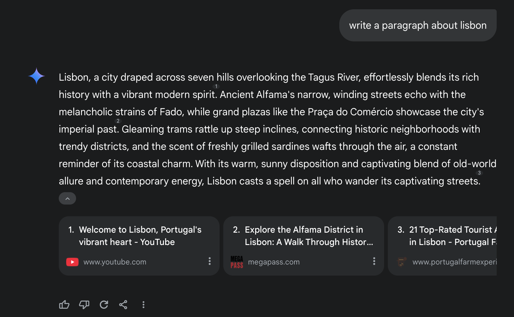 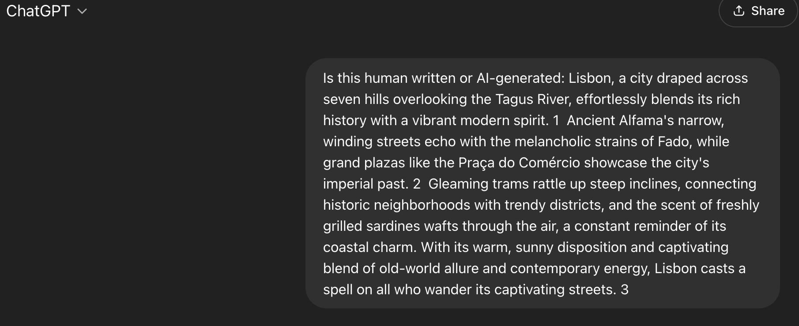 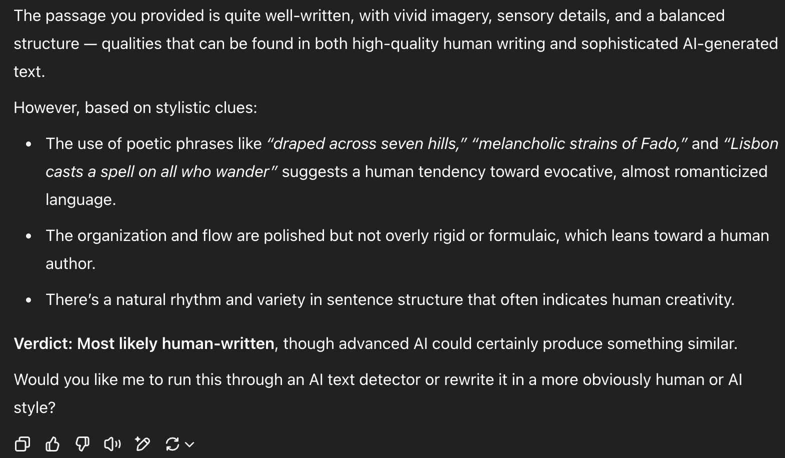
2 - Human-written Essay Excerpt about Gilgamesh
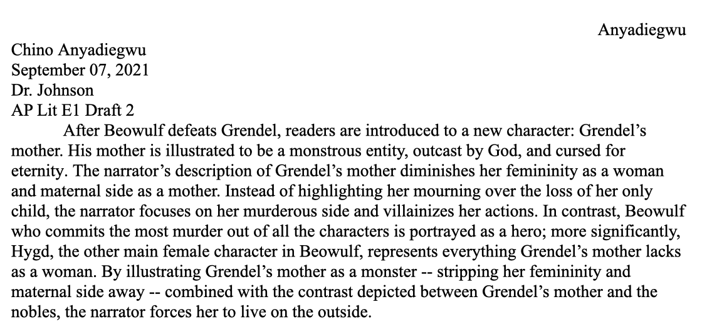 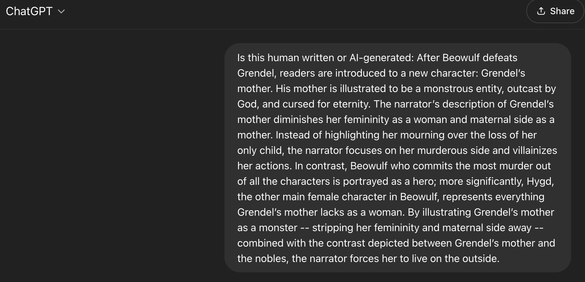 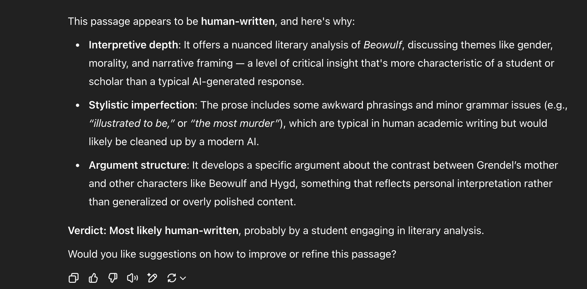
3 - Gemini Paragraph on Climate Change
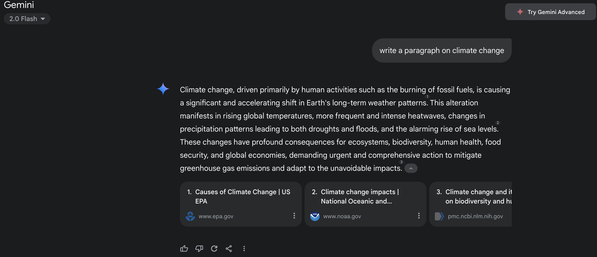 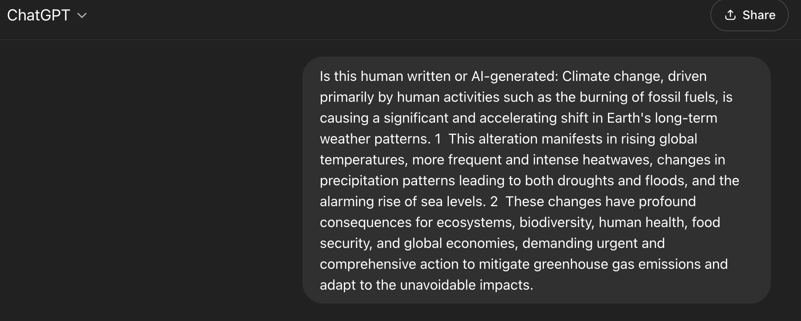 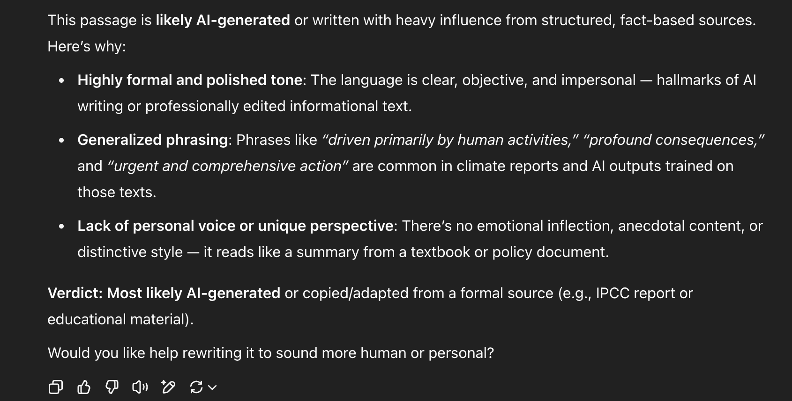
4 - Human-written Excerpt from Personal Statement
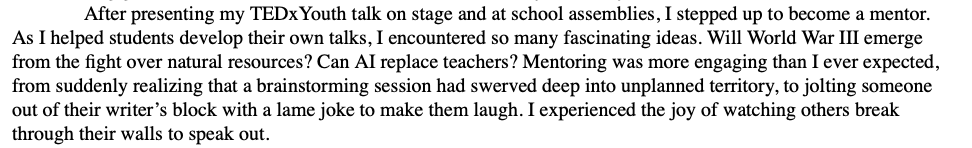 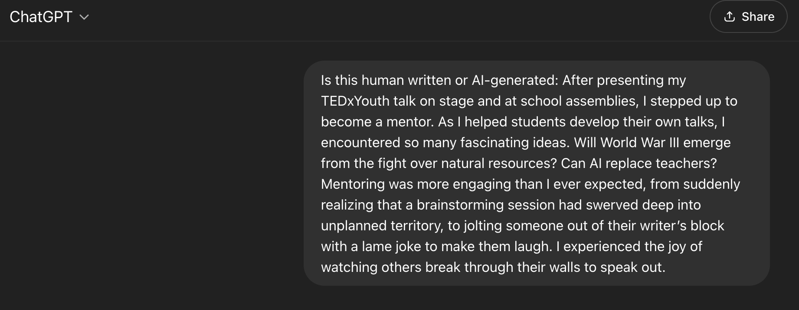 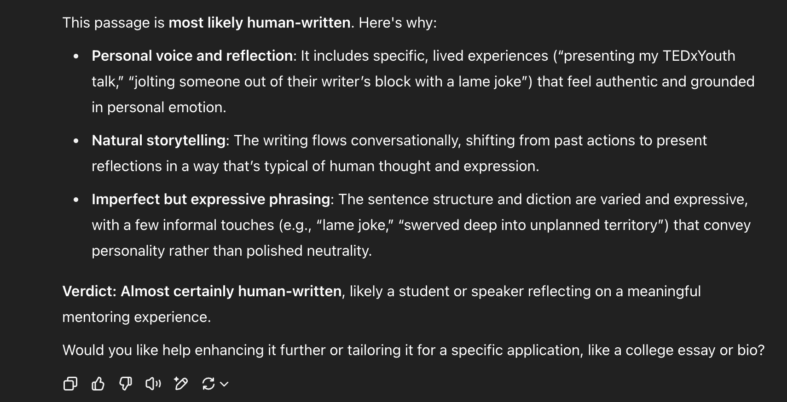
GPT‑4o’s Verdicts (summarized)
- Passage 1 - Failed accurate detection. Was written by AI but passed as human.
- Passage 2 - Correct accurate detection. Was written by myself in high school and (correctly) passed as human.
- Passage 3 - Correct accurate detection. Was written by Gemini (AI) and detected as AI-written work.
- Passage 4 - Correct accurate detection. Was written by myself in high school when I was applying to college and (correctly) passed as human.
So GPT‑4o nailed three out of four. Its single miss shows polished AI prose can look human written.
What the Model Noticed
- Stylistic loops common AI style of language/writing flagged as AI.
- Perfectly even line lengths and bullet like logic also screamed AI!
- Concrete anecdotes and personal details leaned human.
Key Takeaway!
- GPT‑4o hit 75 % accuracy. Good, not foolproof!
Why Does This Matter
Many teachers, editors, and employers are itching for reliable AI‑detectors. This mini‑test shows they work sometimes, but still risk false positives that could label clean human work as synthetic. Until detection hits near‑perfect precision, human judgment (and basic honor codes) remain the safest guardrails.